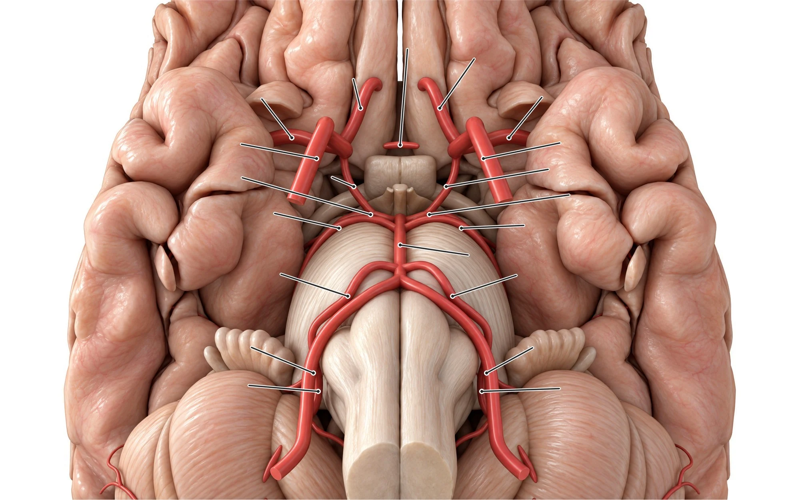

Pick a quiz from the menu.
Circle of Willis and arteries at the base of the brain (inferior)Brain from below (the right side of the body is on the left)

Structures in this quiz
- Anterior communicating artery
- Basilar artery
- Right anterior cerebral artery
- Left anterior cerebral artery
- Right internal carotid artery
- Left internal carotid artery
- Right middle cerebral artery
- Left middle cerebral artery
- Right posterior communicating artery
- Left posterior communicating artery
- Right posterior cerebral artery
- Left posterior cerebral artery
- Right vertebral artery
- Left vertebral artery
- Right superior cerebellar artery
- Left superior cerebellar artery
- Right anterior inferior cerebellar artery
- Left anterior inferior cerebellar artery
- Right posterior inferior cerebellar artery
- Left posterior inferior cerebellar artery
Study notes
Anterior communicating artery
- Location
- A short vessel that joins the two anterior cerebral arteries, just above the optic chiasm.
- Function
- Links the right and left sides of the circle of Willis at the front.
High yield
- The most common site of a saccular (berry) aneurysm. It can press on the optic chiasm (bitemporal hemianopia) and its rupture causes a subarachnoid hemorrhage.
Basilar artery
- Arises from
- The two vertebral arteries, which join at the lower border of the pons.
- Course
- Ascends in the midline on the front of the pons and ends by dividing into the two posterior cerebral arteries.
- Supplies
- Pons and cerebellum, through its pontine, anterior inferior cerebellar and superior cerebellar branches. The labyrinthine artery to the inner ear usually comes from the anterior inferior cerebellar artery.
High yield
- Occlusion damages the base of the pons and causes locked-in syndrome: the patient is awake but can move only the eyes, up and down, and the eyelids.
Anterior cerebral artery
- Arises from
- Internal carotid artery.
- Course
- Runs forward and medially above the optic nerve, then back over the corpus callosum in the longitudinal fissure.
- Supplies
- Medial surface of the frontal and parietal lobes.
High yield
- A stroke in its territory causes weakness and sensory loss of the opposite lower limb.
Internal carotid artery
- Arises from
- Common carotid artery, at about the upper border of the thyroid cartilage.
- Course
- Has no branches in the neck. It passes through the carotid canal of the temporal bone and the cavernous sinus and ends beside the optic chiasm.
- Supplies
- The eye, through the ophthalmic artery, and most of the cerebral hemisphere, through the anterior and middle cerebral arteries.
High yield
- Atherosclerosis at its origin can send emboli to the retina (sudden, brief loss of vision in one eye: amaurosis fugax) or to the brain (transient ischemic attack or stroke).
Middle cerebral artery
- Arises from
- Internal carotid artery, as its larger end branch.
- Course
- Runs laterally in the lateral sulcus.
- Supplies
- Most of the lateral surface of the frontal, parietal and temporal lobes. Its lenticulostriate branches supply the basal ganglia and the internal capsule.
High yield
- A stroke in its territory causes weakness and sensory loss of the opposite face and upper limb, with aphasia if the dominant (usually left) hemisphere is involved and neglect of the opposite side if the other hemisphere is.
- The lenticulostriate arteries are the usual site of lacunar infarcts and of hypertensive hemorrhage.
Posterior communicating artery
- Location
- Runs back from the internal carotid artery to the posterior cerebral artery on each side.
- Function
- Links the carotid and the vertebrobasilar circulations in the circle of Willis.
High yield
- An aneurysm here presses on the oculomotor nerve: the eye turns down and out, the eyelid droops and the pupil is dilated.
Posterior cerebral artery
- Arises from
- The basilar artery, as its end branch.
- Course
- Curves back around the midbrain to the lower and medial surfaces of the hemisphere.
- Supplies
- Occipital lobe, including the visual cortex, the lower surface of the temporal lobe, and parts of the thalamus and midbrain.
High yield
- A stroke in its territory causes loss of the opposite half of the visual field in both eyes, with central (macular) vision spared.
Vertebral artery
- Arises from
- First part of the subclavian artery.
- Course
- Ascends through the transverse foramina of C6 to C1, enters the skull through the foramen magnum and joins the opposite artery to form the basilar artery.
- Supplies
- Upper spinal cord, medulla and, through the posterior inferior cerebellar artery, part of the cerebellum.
Superior cerebellar artery
- Arises from
- Basilar artery, just before it divides.
- Course
- Winds back around the midbrain.
- Supplies
- Upper surface of the cerebellum and part of the midbrain and pons.
High yield
- The oculomotor nerve leaves the brainstem between this artery and the posterior cerebral artery.
Anterior inferior cerebellar artery
- Arises from
- Lower part of the basilar artery.
- Supplies
- Front of the lower surface of the cerebellum and the lateral part of the pons. It usually gives the labyrinthine artery to the inner ear.
High yield
- Occlusion causes lateral pontine syndrome: paralysis of the face on the same side (facial nucleus), with hearing loss, vertigo and loss of pain and temperature sensation on the same side of the face and the opposite side of the body.
Posterior inferior cerebellar artery
- Arises from
- Vertebral artery.
- Supplies
- Back of the lower surface of the cerebellum and the lateral part of the medulla.
High yield
- Occlusion causes lateral medullary (Wallenberg) syndrome: difficulty swallowing and hoarseness (nucleus ambiguus), vertigo, Horner syndrome on the same side, and loss of pain and temperature sensation on the same side of the face and the opposite side of the body.